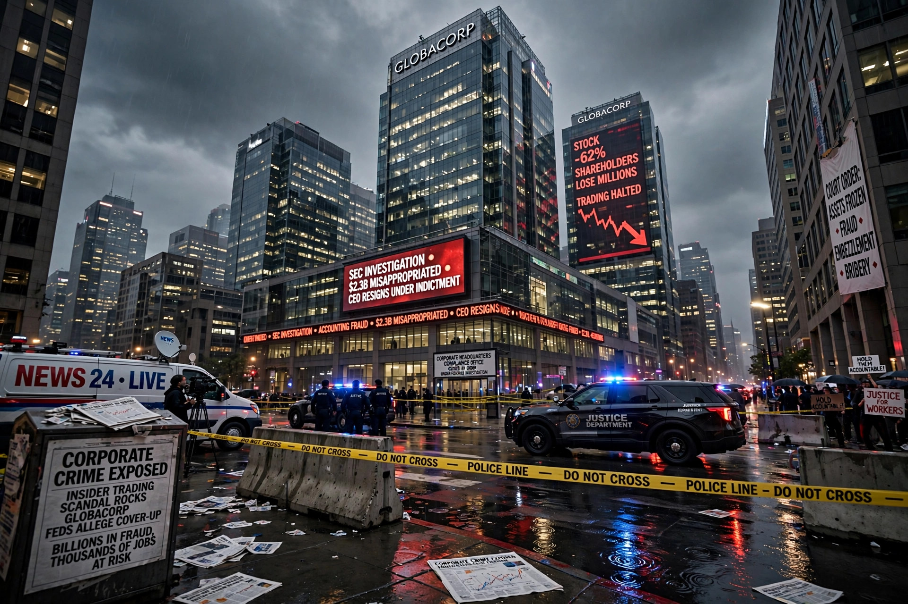

Corporate crime
From Wikipedia, the free encyclopedia
Corporate crime refers to crimes committed either by a corporation (a body corporate having a separate legal personality from its natural persons) or by individuals acting on behalf of a corporation or other business entity. Corporate crimes overlap with white-collar crime, which is a broader category covering financially motivated, nonviolent offences committed by businesses and government professionals.

Definition and scope
Sociologist Edwin Sutherland, who coined the term "white-collar crime" in 1939, directed criminological attention toward offences committed by respectable persons and organizations in the course of their occupations. Corporate crime includes conduct such as fraud, bribery, false accounting, price-fixing and other antitrust violations, environmental offences, health and safety violations, and the sale of unsafe products.
Corporate criminal liability
Because a corporation is a legal abstraction, attributing criminal intent (mens rea) to it presents doctrinal difficulties. Legal systems have developed several models:
- Identification doctrine — used in English law, under which the acts and mental state of senior officers who are the company's "directing mind and will" are attributed to the company.
- Respondeat superior — used in United States federal law, under which a corporation may be vicariously liable for offences committed by employees within the scope of their employment and intended, at least in part, to benefit the company.
- Corporate culture models — used in parts of Australia, under which liability may arise where a corporate culture directed, encouraged or tolerated non-compliance.
Enforcement and sanctions
Sanctions for corporate crime typically include fines, compensation and restitution orders, probation, and reputational consequences. Prosecutors in some jurisdictions use deferred prosecution agreements and non-prosecution agreements, under which charges are suspended or dropped in exchange for fines, cooperation and compliance reforms. Critics argue that such settlements, together with the rarity of prosecutions of senior executives, produce under-deterrence — a concern often summarized by the phrase "too big to jail."
The collapse of the accounting firm Arthur Andersen following its 2002 conviction in connection with the Enron scandal is frequently cited as an illustration of the collateral consequences of corporate convictions, and it influenced later prosecutorial policy on charging organizations.
Examples
- The Enron scandal (2001), involving accounting fraud at the energy company Enron.
- The Volkswagen emissions scandal (2015), in which defeat devices were used to cheat emissions tests.
- The Siemens bribery case (2006–2008), resulting in large fines in Germany and the United States.
See also
- Shell company
- Foreign Corrupt Practices Act
- UK Bribery Act 2010
- White-collar crime
This article is a recreation from memory in the style of Wikipedia.